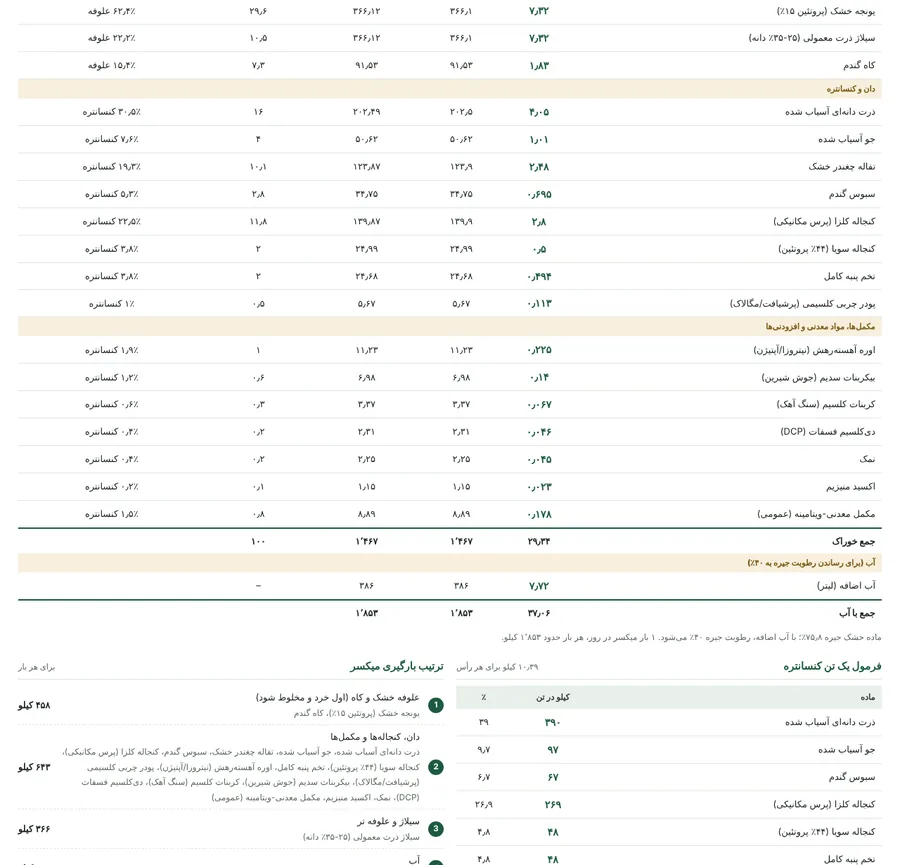

مراحل کار در جیرهیار
-
گروه گاو را تعریف کنید
پروفایل گاو شیری را باز کنید و مشخصاتی مانند وزن، تولید شیر و مرحله تولید را با اطلاعات همان گروه وارد کنید.
-
خوراک و قیمت را ثبت کنید
مواد اولیه موجود، مثل سیلاژ ذرت و یونجه را انتخاب کنید. در صورت داشتن آنالیز آزمایشگاهی، داده آن را در تعریف خوراک دلخواه وارد کنید.
-
آنالیز و برگه جیره را بخوانید
هزینه را کنار شاخصهایی مثل انرژی، پروتئین، فیبر و نشاسته بررسی کنید. در برگه جیره، مقدار هر رأس را از مقدار کل گروه تفکیک کنید.
مقایسه دو ترکیب
برای مقایسه دو ترکیب خوراک، مشخصات گروه را ثابت نگه دارید و قیمتها را با واحد یکسان وارد کنید. اگر دو ترکیب هزینه متفاوتی دارند، قبل از انتخاب شاخصهای آنالیز هر دو را کنار هم ببینید.
مرجع معرفیشده برای این بخش: Nutrient Requirements of Dairy Cattle (NASEM, 2021)
نمونه برگه جیره گاو شیری
در گزارش، مقدار خوراک هر رأس و مجموع خوراک گروه را جدا بخوانید. واحد مقدار و مبنای وزن خوراک را قبل از انتقال اعداد به دستور کار بررسی کنید.

برای مقایسه قیمت مواد اولیه، راهنمای هزینه خوراک را ببینید.
نصب از کافهبازار